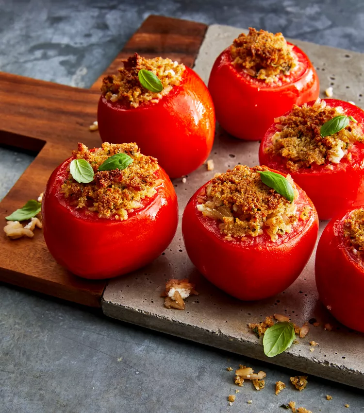

Stuffed Tomatoes

Description
Garlic, parmesan cheese, fresh basil, and toasted nuts
turn brown rice into a superstar stuffling in this
italian inspired stuffed tomato side dish thats cooked
in the air fryer.
Ingredients
- 4 medium tomatoes
- Olive oil, as needed
- 1 cup cooked brown rice
- ⅓ cup freshly grated parmesan cheese
- ¼ cup crumbled goat cheese
- ¼ cup chopped toasted walnuts
- 2 tablespoons chopped fresh basil, divided, or more to taste
- 2 gloves garlic, minced
- ¼ cup italian seasoned bread crumbs, divided
- 1 tablespoon olive oil
Steps
- Cut tops off tomatoes and scoop out flesh with a melon baller,
leaving 1/4- to 1/2 thick sides and bottoms. Discard tomato
tops and flesh
- Brush the bottom of an air fryer basket with olive oil
- Combine cooked rice, parmesan cheese, goat cheese,
walnuts, 1 tablespoon basil, and garlic in a medium bowl.
Combine bread crumbs, and 1 tablespoon olive oil in a small bowl.
Fill tomatoes with rice mixture, then sprinkle with bread crumb
mixture. Place stuffed tomatoes into the prepared air fryer.
- Cook in the air fryer at 370 degrees F until tomatoes
are tender, filling is heated through, and topping is golden brown,
about 15 minutes. Garnish with remaining basil.
Cooks Note
You can substitute shredded mozzarella cheese for goat cheese,
if preferred.